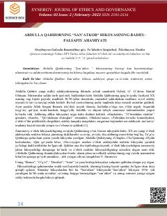

SIjodkor va san'at dunyosiga bag'ishlangan o'zbek badiiy asari.
"Sanatkor" — o'zbek tilidagi badiiy asar bo'lib, matnning tuzilishi va fayl nomi asosida bu ijodkorlik va san'at mavzusiga bag'ishlangan asar ekanligi taxmin qilinadi. Kitobning aniq mazmuni PDF kodlash tufayli to'liq o'qilmadi, ammo sarlavha asosida ijodkor shaxs hayoti yoki faoliyati tasvirlanishi mumkin.